對於實作記憶體管理，通常會有好幾種 pattern 可以使用，其中包含以下 2 種 :
- 單純的 linked list，單一的 memory pool 。 可參考 k&r
- 多條不同大小的 linked list，例如有 chunk 大小為 8 bytes、 16 bytes、 24 bytes… 128 bytes、 128 bytes 以上的 linked lists
多個 memory pool。 可參考 STL 源碼剖析 中所介紹的
此篇為講解第一種較簡單的 malloc 和 free 的實作方法，並且可以在 Linux 與 Windows 二種平台上運作
預備知識
記憶體分布
我們先來看一下 process 的記憶體分布
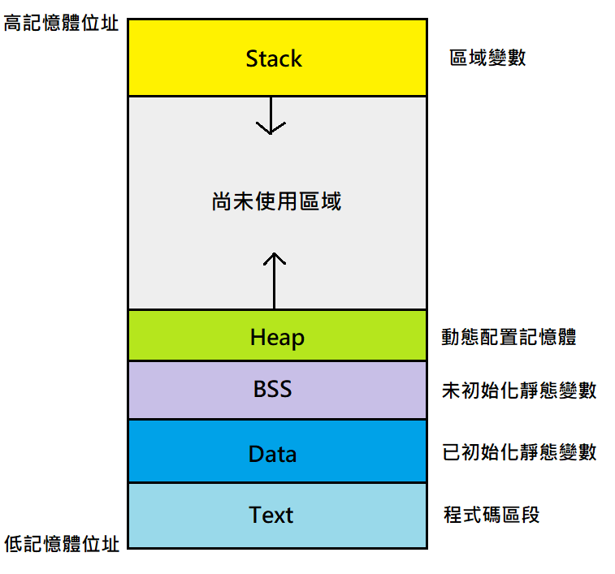
- Text 區段 : 就是放程式碼的部分
- Data 區段 : 放置已初始化的靜態變數
- BSS 區段 : 放置沒有初始化的靜態變數
- Heap 區段 : 這邊就是使用者可以自由管理的記憶體部分
- Stack 區段 : 區域變數
另外，Stack 是會由上往下生長的，也就是會從 high address 往 low address 延伸，Heap 則相反，是由下往上長的
而當使用者需要使用到動態記憶體時，就會呼叫 malloc 來獲得所需要的 memory
但是事實上 malloc 的底層是會需要和 OS (作業系統) 去獲得 memory
還記得剛剛說的嗎 ? Heap 是會生長的
OS 會記錄每個 process 的記憶體中，Heap 的頂部 (最高位址)，會存在一個 pointer 當中
當我們需要更多的記憶體時，只需要請 OS 幫我們把 Heap 的頂部往上增加，我們就可以使用他們
若是使用者去存取到 Heap 頂部以上的部分時 ( 也就是 “尚未使用區域”)，這是不合法且危險的行為
例如駭客可以再該區域放入 shell code 並執行，因此目前大多的作業系統都會去防範這種 “越界” 行為
Linux 與 Windows 的 Heap Functions
Linux 和 Windows 都有提供可以更改 Heap 頂部的 system call，更改 Heap 頂部就等同於和 OS 要記憶體
在 Linux 中，有提供 2 個 system call
1 |
|
man page 上的描述為 :
brk() and sbrk() change the location of the program break, which defines the end of
the process’s data segment (i.e., the program break is the first location after the
end of the uninitialized data segment).
Increasing the program break has the effect of allocating memory to the process;
decreasing the break deallocates memory.brk() sets the end of the data segment to the value specified by addr, when that
value is reasonable, the system has enough memory,
and the process does not exceed its maximum data size (see setrlimit(2)).sbrk() increments the program’s data space by increment bytes.
Calling sbrk() with an increment of 0 can be used to find the current location of
the program break.
大略意思是說 brk() 和 sbrk() 可以改變 program break 的位置
且往上增加就等同於分配記憶體
int brk(void *addr)
brk() 會把 program break 設定到 addr，如果設定成功會 return zero，失敗會回傳 -1void* sbrk(intptr_t increment)
sbrk() 會把 program break 增加 increment，設定成功就會回傳上一個program break位址，失敗會回傳 (void*)-1
當 increment = 0，回傳直則代表當前 program break 的位址
在 Windows 中，有許多 Heap Function，可以參考MSDN，這邊我們只提到幾個
1 | HANDLE GetProcessHeap( ); |
在 Windows 中，每個 process 都會擁有一個 Defualt Heap，我們可以使用 GetProcessHeap() 來獲得 Heap 的 Handle
有了 Heap Handle，就可以使用 HeapAlloc() 與 HeapFree() 來分配與回收記憶體
Windows 還允許我們用 HeapCreate() 來創建 Private Heap，詳細資訊可以參考 MSDN
HANDLE GetProcessHeap()
回傳 Process 的 Default HeapDECLSPEC_ALLOCATOR LPVOID HeapAlloc( HANDLE hHeap, DWORD dwFlags, SIZE_T dwBytes )
hHeap : heap handle
dwFlags : 參數，可以放置 0 就好
dwBytes : 要獲得的記憶體大小
這邊簡略介紹完了 Linux 與 Windows 二大作業系統有關於 Heap 的 system call 之後
我們就可以進入實作 malloc 的環節了
記憶體分配模式
本篇所講解的是參考 k&r 中的實作方式，並用我個人的理解講解與說明他為甚麼會這麼做
Pattern 1
首先，我們來思考一下 malloc & free 的行為模式
對於使用者來說 ( 也就是 programmer )，需要記憶體時就呼叫 malloc，不需要用到的時候就用 free 將他歸還
這個動作也許在一支普通的程式中出現上百次上千次都很正常
因此，若每次呼叫 malloc 時，底層都呼叫了 system call (上面介紹的) 來和作業系統要記憶體
然後 free 也都會呼叫 system call 來歸還記憶體給 OS
這支程式光是在 allocating memroy 時就呼叫了一大堆的 system call
我們都知道 system call 的 overhead 是很大的，它會需要做 context switch 與 space 的轉換
因此就有了 memory pool 的概念Pattern 2
現在我們呼叫 malloc 時，就不要再直接去 call system call 了，先去檢查 memory pool 中有沒有一塊夠大的記憶體可以滿足需求
若有的話，就把它交給使用者，若沒有的話，再去呼叫 system call 和 OS 要記憶體
當使用者呼叫 free 時，我們就把它存入 memory pool 中，不再把這塊記憶體歸還給 OS，因為歸還記憶體其實是沒有必要的
programmer 要求記憶體時，可以從 memory pool 去找，當真的 memory pool 無法提供時，才會需要去求助於 OS
所以不會有無止盡的和 OS 要求記憶體，造成耗光 memroy 的問題，而且程式結束時這些記憶體都會還給 OS
當然在非常極端狀況下，不管是甚麼方法，會爆掉就是會爆掉Pattern 2.5
若使用者要求了 n bytes 的記憶體，我們不需要每次都老老實實和 OS 說 “給我 n bytes” 的記憶體
可以設定一個門檻值 T，若 n 小於 T，則我們就直接要求 T bytes，大於 T 的話才會乖乖的要求 n bytes
這樣的好處是能夠減少 system call 的次數
另外當使用者 free 記憶體時，把 memory 丟進 memory pool 的同時，可以檢查有沒有記憶體和這塊 memory 是相鄰的
例如 A 的範圍是 0x10 ~ 0x20，檢查 memory pool 時發現 B 的範圍是 0x21 ~ 0x35，我們就可以把它們合併在一起
變成範圍是 0x10 ~ 0x35 的 C，這樣能夠讓之後較容易找到 “夠大的記憶體區塊”Pattern 3
由於我們把一塊記憶體交給使用者使用的時候，我們還是需要去紀錄一些資訊，例如 : 這塊記憶體的大小等等
有一種方法是可以建一個 table 來記錄，例如 :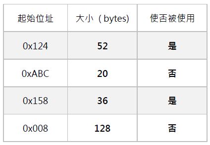
但這樣會有幾個缺點:
- Table size 可能會很大
- 若要進行 Patern 2.5 的 memroy 合併動作，會需要大量的 search，或是會需要對 Address 進行排序
因此不採用這種作法，另一種做法是，在每個記憶體區塊的前面加上 Header，來記錄所需要的資訊
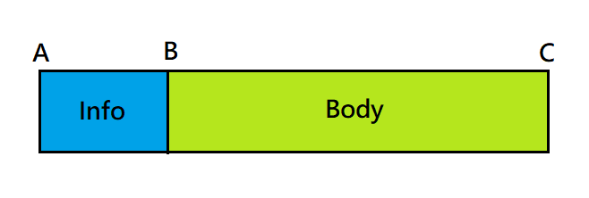
Info 中會記錄 memory 所需要的資訊，例如大小，然而使用者能夠看到且能夠使用的就是 Body 的部分，也就是 B ~ C
這樣的實作方式就不會上述 2 種問題了Pattern 3.5
現在大部分的 machine 會要求記憶體需要對齊 ( Alignment )，所以用 Bytes 來當作紀錄 memory 的單位有時候會碰上一些麻煩
那如果可以確保 Header 會是對齊的，我們就能夠使用 Header 來當作基本單位，也就是每一塊記憶體的大小就會是
記錄成 N 個 Header，實際上的大小為 N x sizeof(Header)Pattern 4
由於每一塊記憶體 Block 都會有以下特性 :- 連續性。( 如 Pattern 3 的圖 )
- 獨立性。( 任 2 塊 memory block 一定不會也不能夠重疊 )
- 可比較。( 由於上述 2 點，任 2 塊 memory block 必定可以用起始 address 來比較大小 )
那麼我們就可以使用一個 linked list 將 memory blocks 串接起來，且每一塊 block 必定是由低位址到高位址連接起來
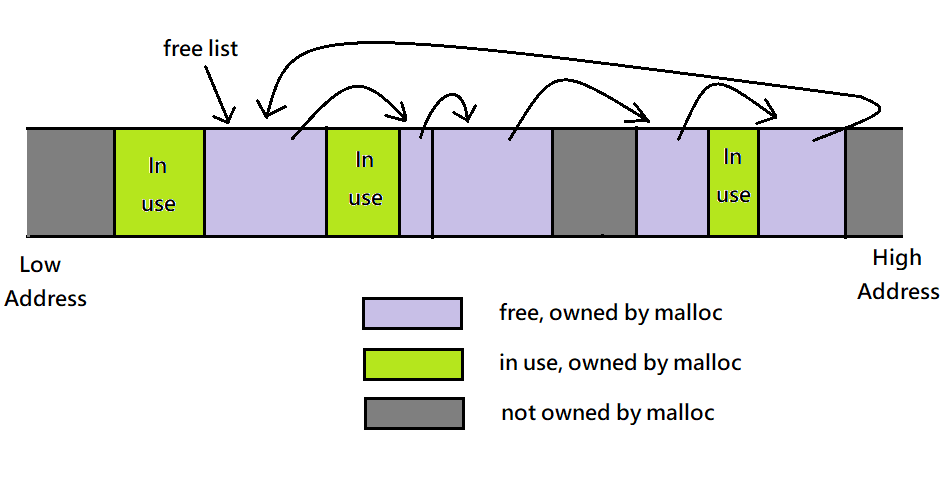
使用 free list 指標來維護這條 linked list，這也就是 memory pool
其中紫色和綠色的部分是 OS 已經分配給 malloc，可以讓使用者自行去運用，而灰色的部分是還未分配給 process 的區段此外，當 programmer 呼叫 malloc 時，我們就會遍歷 linked list 去尋找合適的 block
對於搜尋合適的 block，我們有幾種選擇:- 最契合的大小 : 若要求 n 個 header size 的 memory，就尋找所有 >= n 的 blocks 中大小最小的，也就是
越靠近 n 越好，等於 n 最好，會需要遍歷一次 linked list - 第一個合適的 : 若要求 n 個 header size 的 memory，就去遍歷 linked list，只要找到有大於等於 n 的 block
就回傳給使用者
本篇文章使用第二個方法的改良，我們不直接回傳該 block，要先檢查他的大小，若大於 n 的話，就把他分割成 2 部分
一部分大小就等於 n 並回傳給使用者，剩下的那部份就繼續放回 linked list，如下圖所示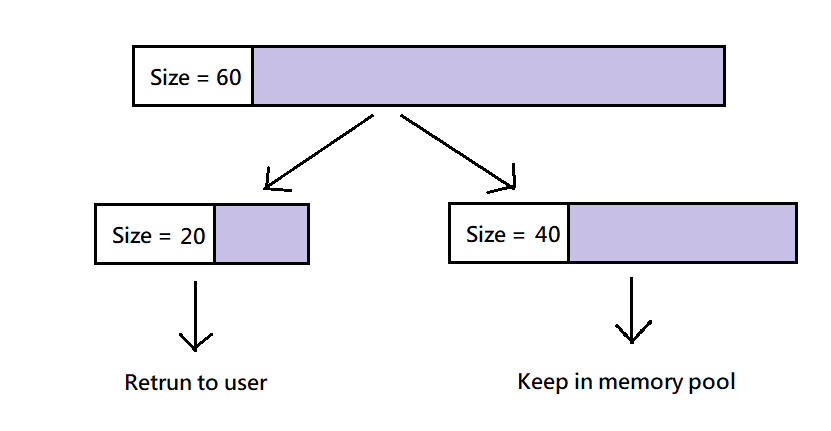
若要求 n = 20，且第一個找到 size 大於 n 的 block 大小為 60，就把他分隔成 2 個 block，大小分別為 20 與 40Pattern 5
剛剛 Pattern 4 的 lilst 是不管 memory block 的大小，通通給他串在一起，但我們還可以讓他進一步的分類
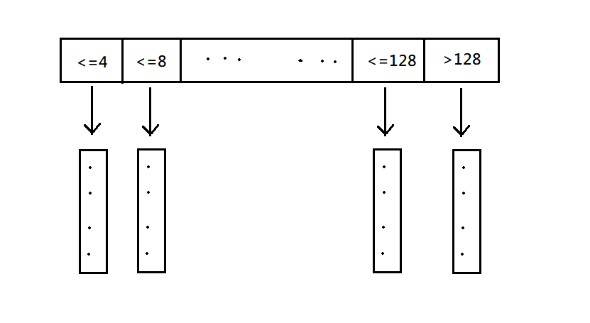
可以用一個 array of pointers 來儲存不同 block size 的 linked lists，這樣可以讓查找合適 size 的步驟加快許多
詳細可以參見 STL 源碼剖析
實作
我們先來對函式明確分工一下
- malloc : 會維護一條 linked list，當使用者要求記憶體時，會先去 list 中查找，並使用第一個合適的搜尋方法
若沒有足夠大的 block，則會和 OS 要更多 memory - free : 將使用者歸還的 memroy block 放回 linked list，且必須要維持 list 中依照 address 低到高排序的規則
此外，也順便檢查使否有相鄰的 block 可以合併 ( Pattern 2.5 ) - morecore : 負責和 OS 要求記憶體，也是能夠將不同作業系統的 system call 封裝起來的函式
Part 1
有了各個函式的明確定義，我們再來看一下 memory block 的 Header 與一些基本定義
1 |
|
MIN_ALLOC_SIZE: 就是 Pattern 2.5 所提到的最小門檻值ALIGN: 我們用long來當作 alignmentHeader: 注意他是一個 union，強迫 Header 最小必須要和ALIGN對齊
另一個物件 (Anonymous Structures) 紀錄 2 個資訊- next : 下一個 Header 的位址 (linked list)
- size : 此 block 的 size ( 單位是多少個 Header，且也包含 Header 本身 )
再來就是 header file 的其他定義:
1 |
|
前面的條件式編譯是判斷作業系統是 Windows 還是 Linux
另外為了讓 morecore 在切換作業時不用去做更動，我們把呼叫 system call 的實作放進了 __os_alloc
Windows 系統 ( 可以回到最上面複習一下 )
1 | static void* __os_alloc(size_t num) |
Linux 系統 ( 可以回到最上面複習一下 )
1 | static void* __os_alloc(size_t num) |
Part 2 : my_malloc
我們需要維護一條 linked list 當作 memory pool，對於實作 linked list 的方法，我個人比較喜歡使用 Handle，如下圖
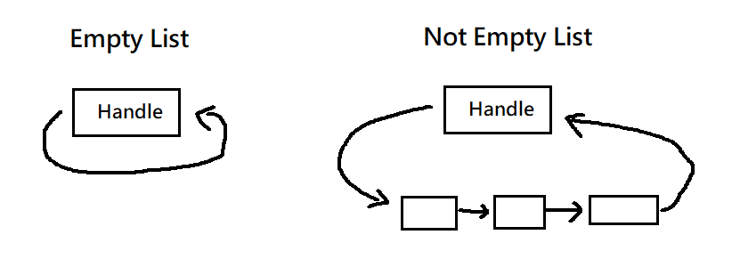
當 linked list 是空的時候，就只剩下 Handle 會自己指向自己，不為空時，list 的頭尾都會連接到 Handle
這樣的好處是可以很方便的插入一個元素到Empty List，也可以很方便的刪除掉 list 的最後一個元素 ( size=1 -> size->0 )
但此處我們除了使用 Handle 來時做 linked list 外，還有使用一個 free_list 指標來指向 linked list 中的某個元素
並把該元素當作是遍歷 list 的起點，然而 free_list 指向的元素是可以改變的，也就是搜尋的起點是會改變的
至於為甚麼要這樣做的理由，在文章 Part 3 : free 會做說明
因此我們需要 2 個 global varible
1 | static Header base; // the handle of list |
再來我們先來看一下 my_malloc 完整程式碼，下面會一一解說
1 | void* my_malloc(size_t bytes) |
首先在 line 6，我們使用1
units = (bytes + sizeof(Header) - 1)/sizeof(Header) + 1;
來計算使用者要求的記憶體 bytes 所需要的 Header block 數量，注意還要包含真正紀錄 info 的那塊 Header
然後 prev 和 now 兩個指標代表的意思為
now: 現在要進行操作的 list nodeprev: now 的前一個 list node
我們不需要再另外設一個變數去紀錄now的下一個 list node 是誰，因為可以很輕易地使用now->meta.next來取得
接下來就是要判斷是否是使用者第一次呼叫 my_malloc，若是第一次呼叫的話，會有以下幾種情形 :
- Linked List is empty
- base 還未初始化
- free_list 指標是 NULL，也就是還沒指向 lisked list 中的任何元素
因此若是第一次呼叫的話，我們會需要做幾個初始化的動作:
- 讓 base 自己指向自己，變成一個環狀 linked list 的狀態
- 把 free_list 指向 list 中唯一個 node，也就是 base
- 更新 prev 的值
- 把 base 的 size 設成 0，目的是為了接下來在查找是否有合適的 block size 時，list handle 不會去影響到結果
就是以下這段程式碼1
2
3
4
5
6
7
8prev = free_list;
if(prev == NULL)
{
base.meta.next = &base;
free_list = &base;
prev = &base;
base.meta.size = 0;
}
再來就是要遍歷 linked list，找出第一個夠大的 block，注意起始點是 free_list 所指到 node 的下一個 node
因為剛剛上面已經讓 prev = free_list
1 | for(now = prev->meta.next; ; prev = now, now=now->meta.next) |
在迴圈中，我們要檢查 2 件事 :
now node 的 size 是否大於使用者個需求
若 now node size 恰好等於使用者需求時，就把前一個 node 的 next 指標指向 now node 的下一個 node
若 now node size 大於使用者需求，我們就需要把它分割，並把多餘的部分繼續留在 Linked list 中，分割的步驟如下圖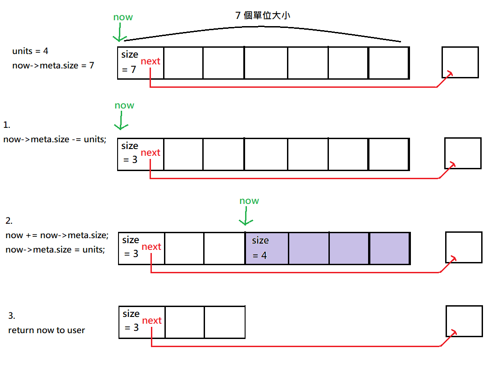
注意從頭到尾原始 now 的 next 指標都沒有更動，整個過程就只是把這個過大的 block 分割，並回傳後半段給使用者
然後再把
free_list = prev，這樣下一次搜索時，就會從原始的 now node 繼續搜尋
最後要回傳(void*)(now + 1)，因為使用者不會看到我們用來記錄 Info 的 Headernow node 是否等於 free_list
若相等的話，代表已經搜索完整個 linked list 了，就要呼叫morecore來和作業系統要更多 memory
若不相同，代表還沒搜尋完整個 linked list
Part 3 : my_free
1 | void my_free(void *p) |
首先，我們要先把使用者回傳的 pointer p 推移回來，這樣我們才看的到紀錄 Info 的 Header
對於第一個迴圈
1 | // find the right position of header in the linked list |
!(header > ptr && header < ptr->meta.next): 中間的header > ptr && header < ptr->meta.next代表
header 會在 ptr 與 ptr->meta.next 的中間，如下圖所示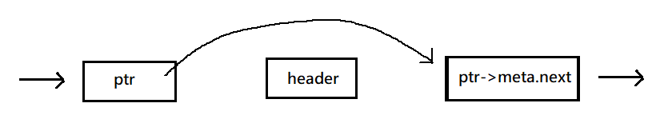
因此若
!(header > ptr && header < ptr->meta.next) = false，代表 header 介於 ptr 與 ptr->meta.next 的之間ptr >= ptr->meta.next: 代表 ptr 是 list 中 address 最大的 元素，且 ptr->meta.next 是 address 最小的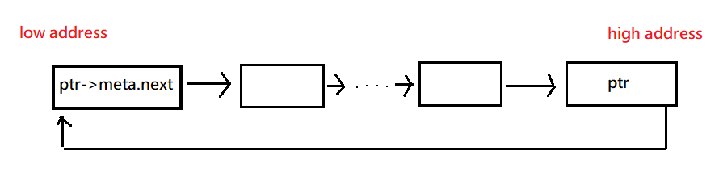
(header > ptr || header < ptr->meta.next): 代表在上面那種狀況下，header 會出現在這 2 個位置的其中一個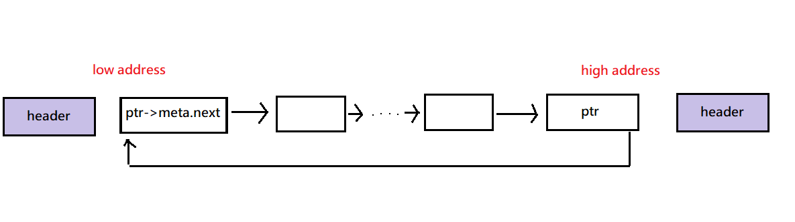
也就是比 ptr 還要右邊，或是比 ptr->meta.next 還要左邊
因此，總和以上，最後跳出迴圈的時候，header 只會出現在 3 種可能的位置
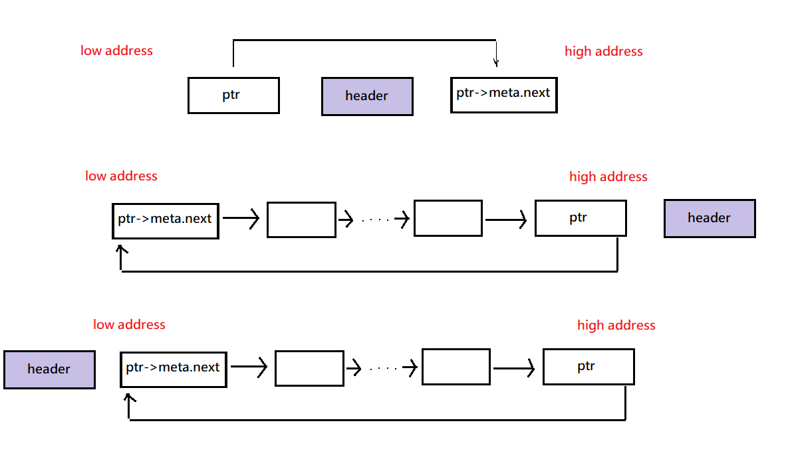
- 在 ptr 與 ptr->meta.next 的中間
- 在 linked list 的最右邊
- 在 linked list 的最左邊
接下來我們就要來檢查是否有可以合併的 block 和把 header 插入到 list 中
觀察一下，若是要從 header 的右邊進行 block 合併，可能的情況就只有 1 和 3
另外，要從左邊進行合併的話，可能的位置為 1 和 2
程式碼如下:
1 | // check the right hand side of the header |
- 先檢查 header 的右邊有沒有和 ptr->meta.next 相鄰
有的話，將 ptr->meta.next 合併到 header，並更新 header->meta.next 指標
沒有的話，只要更新 header->meta.next 指標就好 - 在檢查 header 的左邊有沒有和 ptr 相鄰
有的話，把 header 合併到 ptr 中，並更新 ptr->meta.next 為 header 的下一個 node (上一個步驟的結果)
沒有的話，就把 ptr->meta.next 指向 header
最後再把 free_list 指到 ptr，這樣下一次就會從 ptr 的下一個 node 開始遍歷 list
可能會是 ptr->meta.next ( ptr 與 header 合併)，或是 header ( header 獨立或是和 ptr->meta.next 合併)
Part 4 : morecore
此函式就是要負責與作業系統溝通，不過實際上 system call 的部分都已經包裝在 __os_alloc() 中了
程式碼如下:
1 | static Header* morecore(size_t num) |
首先我們先檢查使用者要求的記憶體大小有沒有小於門檻值
再來就呼叫 __os_alloc() 來和 OS 要 memory
若回傳 NULL 則代表失敗，直接回傳給使用者 ( 要他們自己去負責這個狀況 )
接著再將 header 的 size 設定好
最後，利用 my_free() 來將這塊新要來的記憶體插入到 free_list 中
並回傳 free_list
我們再回顧一下 Part 2 有關 morecore 的程式碼
1 | // go around and back to the free_list (start) |
now 會接住 morecore 回傳的值，也就是 free_list，然後 my_malloc 會進行下一次的迴圈now 會往下一個 node 移動，now = free_list->meta.next
由 Part 3 我們可以知道， my_free 的最後會把 free_list 設為 ptr
且根據 header 是否有合併可以分成幾種情況:
- header 都沒有合併 :
free_list->meta.next= ptr->meta.next = header - header 只和右邊合併 :
free_list->meta.next= ptr->meta.next = 合併後的 header - header 只和左邊合併 : free_list = ptr = header，因此
free_list->meta.next= 原本的 ptr->meta.next - header 和左右邊都合併 : free_list = ptr = header，因此
free_list->meta.next= 原本的 ptr 後 2 個 node
因此當 my_malloc 遍歷完整個 linked list 後，還是找不到夠大的 block，就會呼叫 morecore 來獲得新的 memory
然後再從頭開始遍歷 linked list，整合後上面那 4 種狀況，可以發現
情況一和情況二 都會在重新遍歷 list 的第一次迴圈就找到那塊和 OS 要的 memory (也就是 header) –> O(1)
情況三和情況四 就必須要重新遍歷完整個 list 後才會找到 header –> O(N)
不過我個人認為，應該是情況一發生的機率比較大，所以這種作法的效率應該還是不錯的